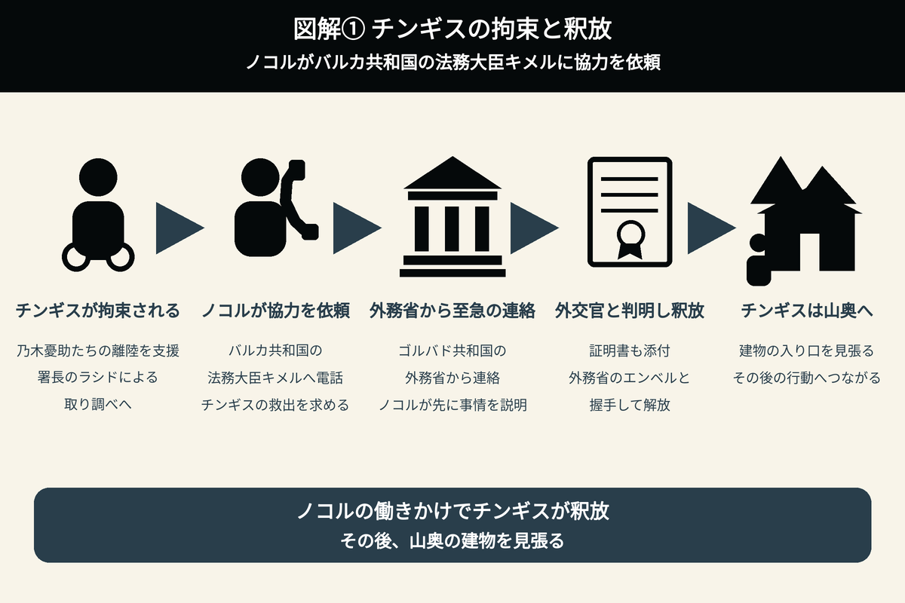
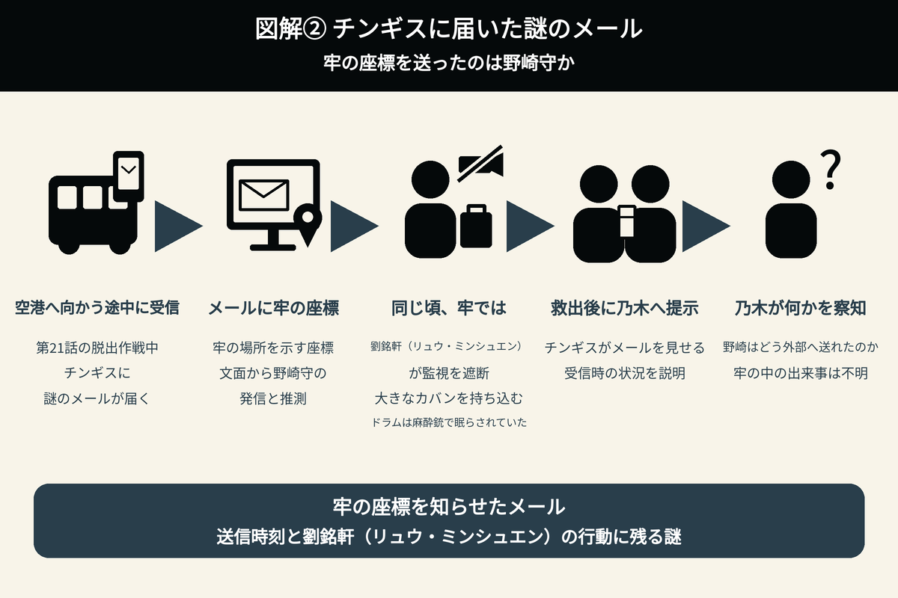
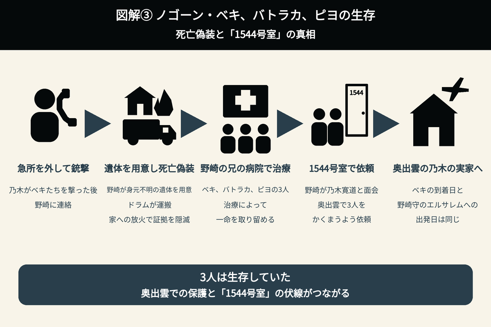
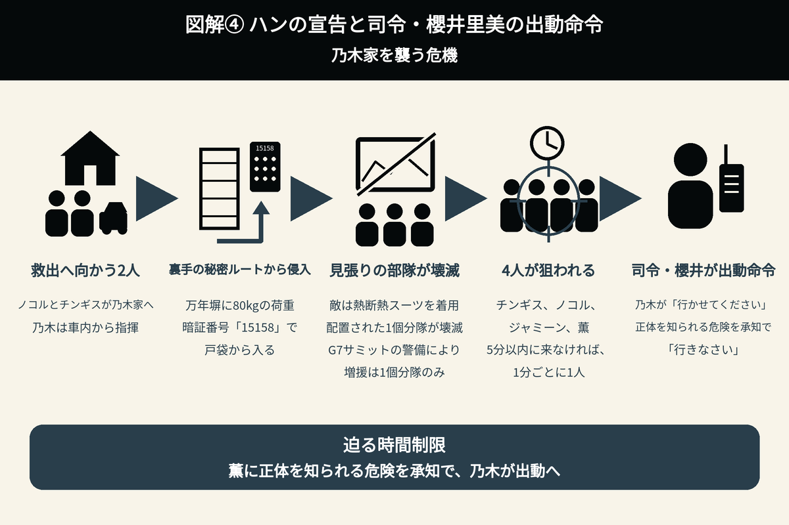

ノゴーン・ベキの生存が判明
ジャミーンに迫る危機
チンギスの釈放とドラムの救出を経て、ノゴーン・ベキ、バトラカ、ピヨの生存が明らかになる第22話。1544号室の真相がつながる一方、ジャミーンの居場所がXinxi（シンシー）に伝わり、乃木家へ危機が迫ります。

1. チンギスの釈放への協力を、バルカ共和国の法務大臣キメルに依頼
乃木憂助たちは、Xinxi（シンシー）から黒須駿ら別班メンバーを奪還し、プライベートジェット機でゴルバド共和国を脱出した。
機内の窓から様子を確認すると、チンギスが警察に拘束されていた。チンギスは、署長のラシドに取り調べられることになる。
その後、乃木憂助たちは無事にゴルバド共和国の領空を通過した。
ノコルは、バルカ共和国の法務大臣キメルに電話をかける。無事に飛び立てるよう、自ら足止めを買って出たチンギスを救い出すため、ノコルはバルカ共和国の法務大臣・キメルに電話でコンタクトを取った。
少し遅れて、ゴルバド共和国の外務省からも至急の連絡が入る。しかし、ノコルは、その件についての電話だと説明し、先に話を聞いてもらった。
チンギスは、ゴルバドの外務省のエンベルと握手を交わし、晴れて解放された。
ブルーウォーカー・太田梨歩に釈放の経緯を調べてもらうと、チンギスは外交官であることが判明したため釈放されたと分かった。証明書も添付されていた。
その後、チンギスは山奥に現れ、建物の入り口を見張っていた。

2. ドラムが脱出を試みて銃撃される――チンギスによる救出
チンギスが山奥で建物の入り口を見張り始めてから、2日後のことだった。
劉銘軒（リュウ・ミンシュエン）が、再び野崎守の牢に現れた。
監視カメラを切らせ、部下も下がらせると、今回は3時間だと告げて中に入った。さらに、カーテンをかけ、中が見えないようにした。
ドラムはジャミーンを思いながら、手錠の鎖を腕力で引きちぎる。
野崎守がどうなろうとも、どうでもよかった。ジャミーンのために脱出することだけを、一心に考えていた。
タイラン邸で頭を叩かれていたときに入手したクリップを使い、牢屋の鍵も開けた。
すると、野崎の牢から劉銘軒（リュウ・ミンシュエン）が汗を拭きながら出てきた。ドラムは慌てて牢屋の中に戻るが、戸が少し開いていたことに劉が気付く。
ドラムは牢から飛び出し、劉を突き飛ばした。しかし、劉はドラムの腹部に銃弾を6発撃ち込む。
それでもドラムは劉の首を締め上げたが、口から血を吹き、倒れてしまった。
劉はドラムの頭部を狙おうとするものの、弾切れだった。
部下の銃で頭を撃とうとすると、野崎が「やめろ！」と絶叫する。
劉は、脳みそが飛び散ると掃除が大変だと言い、部下にドラムを外に埋めてくるよう指示した。
牢の外に埋められ、万事休すかと思われた。しかし、ゴルバド共和国に残っていたチンギスが牢の前で張り込んでおり、ドラムを救出した。
ドラムは一時心肺停止になるものの、チンギスの人工呼吸によって無事に助けられた。
劉がわざと急所を外し、銃弾が内臓に到達しないようにしたのか。あるいは、銃に細工をした可能性もあるが、現状では不明である。
3. ドラムをアゼルバイジャンへ搬送――内臓に達していなかった6発の銃弾
乃木憂助は司令・櫻井里美に、ゴルバドから、和田の火葬が終了し、チョッキーのプライベートジェットで立川駐屯地に到着する予定だと報告する。
物語では語られなかったが、野崎守から警視庁サイバー犯罪対策課・東条翔太に送金された1億2600万円と1億6000万円は、すべて和田貢の遺族に渡されるのだろうか。
第15話では、野崎から東条へ1億2600万円が送金された。乃木は、この金を使わないよう求め、拉致された別班員たちの「遺族に使う場合もありますので」と説明していた。
第16話では、野崎から東条の口座へ1億2600万円、さらに翌日には1億6000万円と、2回の送金が行われていたことが判明した。
乃木たちは、この数字に、第15話で出てきた「π」を組み合わせる。
そして、AIハヤトに振込額×πを計算させ、座標として読み取った。
1億2600万円×πからは39.5840674、1億6000万円×πからは50.2654824という数字が導かれる。
2回の送金から得られた数字を組み合わせることで、場所がゴルバド共和国のオルコ村「シャキ城」だと判明した。送金に隠されていた伏線が回収された場面だった。
そこへノコルが駆け込んできた。チンギスから電話がかかっていると伝え、「何をしている」と促す。
電話の内容は、ドラムが撃たれたというものだった。
それを聞いた司令・櫻井里美は、乃木憂助にアゼルバイジャンへ向かうよう指示する。
ブルーウォーカー・太田梨歩たちも、荷物をまとめて引き上げるため、車に乗り込もうとしていた。そこへ乃木から待ったがかかる。
乃木はチンギスに、30分以内に、別班レディ・田代久美子のエージェントである書店のナティックとロマル（男性）の2人が、そちらに向かうと告げた。
乃木たちは、バルカ共和国から、ゴルバドの隣国であるアゼルバイジャンへ向かった。
チンギスとエージェント・ナティック、ロマルは、ゴルバド共和国から隣国のアゼルバイジャンへドラムを搬送した。
乃木は、ドラムの血液型がO型、Rhプラスであると告げる。
田代久美子が、O型、Rhプラスの血液を緊急で運んだ。
医師による輸血が行われ、ドラムは一命を取り留めた。
腹部のレントゲン写真では、銃弾はすべて筋肉部分で止まっており、いずれも内臓には到達していなかった。
東条は言う。
その言葉に、乃木は何かを悟ったかのように表情を変えた。野崎からの信号を受け止めた可能性がある。
4. チンギスに届いた謎のメール――牢の座標を送ったのは野崎守か
乃木はチンギスに、なぜあの場所にいたのか、経緯の説明を求めた。
チンギスは、第21話でバスに乗って空港へ向かっていた際、謎のメールが届いていたことを説明する。
ドラムの救出後、チンギスは乃木にそのメールを見せ、牢の場所を示す座標が送られてきたと話した。
文面から、おそらく発信したのは野崎守だという。
しかし、チンギスにメールが届いたのは、ちょうど乃木らが脱出作戦を実行していた最中だった。
その頃、劉はドラムを麻酔銃で眠らせたうえで、野崎の牢に大きなカバンを持ち込み、「ご褒美タイム」を過ごしていた。
その時間に、野崎が外部へメールを送れていたのだとすれば、何を意味するのか。
チンギスからメールのことを聞いた乃木は、何かを察知したような表情を見せた。

5. 娘プリシャはジャミーンなのか――写真とテントの機密事項を検証
ドラムがジャミーンの写真を整理した際、亡くなったアディエルの奥さんと、ジャミーンが生まれたときからの写真があった。
乃木憂助は、そのことをドラムに語る。
ノコルは、それらがテントによってCGで作成された写真だと明かした。
ノゴーン・ベキとアディエルは、7年前、その子供をテントに連れて帰ってきた。
また、ベキは、このことを幹部会の6名だけが知る機密事項とした。
アディエルは、当時、孤児院担当の幹部だった。その幹部会議で、テントを抜けてこの子を育てると言い、ベキも即座にそれがよいと賛同していた。
ジャミーンと命名したのは、アディエルだった。
乃木憂助は「その誓いがあって話せなかったのか」と口にし、ノコルも「それがどうもおかしい」と疑念を示す。
その疑念とは、なぜ娘のプリシャだけを助けたのか、ということだった。
6. ノゴーン・ベキ、バトラカ、ピヨの生存が確定――死亡偽装と「1544号室」の真相
捕虜であったノゴーン・ベキは、なぜ娘のプリシャだけを助けたのか。なぜ、エリシャ・ママドフ博士を連れ去らなかったのか。
娘プリシャは話せず、父・アディエルも死亡している。
ここでドラムが、ノゴーン・ベキに聞けばいいじゃないかと口にしてしまう。またもエージェントらしくない失態を犯し、乃木憂助に謝った。
乃木憂助とノコルは仕方なく、偉大なるノゴーン・ベキは今も生きているとチンギスらに語る。
そして、日本の奥出雲町にある乃木の実家で療養しているという真実を明かした。
第10話で乃木憂助の銃弾を受けたノゴーン・ベキは、死亡したことになっていた。バルカ共和国では、盛大な葬儀まで行われていた。
乃木は、ベキたちの急所をわずかに外して撃った後、野崎に連絡していた。
野崎が身元不明の遺体を用意し、ドラムがそれを運んだ。その後、家に火をつけて証拠を隠滅した。
乃木から連絡を受けた野崎は、自身の兄が経営する病院で治療を受けさせ、一命を取り留めさせていた。
その後、野崎守は、兄の病院で治療を受けたベキ、バトラカ、ピヨの3人を、奥出雲にある乃木の実家でかくまうよう、伯父・乃木寛道に依頼した。
ベキが奥出雲に到着した日と、野崎守がエルサレムに飛んだ日は同じだった。
また、第2シーズン第1話（第11話）で、野崎が乃木の伯父・乃木寛道とホテルニューオータニの1544号室で会った理由も、これだった。
兄の病院で治療したベキ、バトラカ、ピヨを、乃木の実家がある奥出雲でかくまってもらうための依頼だったことが分かり、伏線が回収された。

7. 野崎の裏切りが発覚――ジャミーンの居場所がXinxi（シンシー）へ
その後、ドラムの証言によって、新たな事実が明らかになる。
野崎はタイラン邸での尋問で、当然伏せていたとみられていたジャミーンの居場所について、「日本」だけでなく「乃木の家」とまで明かしていた。
核融合技術の利権を狙う樊林杏（ハン・リンシン）に、ジャミーンの居場所を把握されてしまったのだ。
さすがの乃木憂助も理解できない様子だった。すると突然、Fが現れ、「野崎！ ふざけんなよー！！」と絶叫した。
乃木憂助は部屋から全員を追い出し、ブルーウォーカー・太田梨歩と2人で、司令官・櫻井里美にこの件を報告する。
樊林杏（ハン・リンシン）は、世界中の指折りの工作員を、一時的に、短期間で呼び寄せると推測された。
司令・櫻井は乃木に、ガラマン空港で樊林杏（ハン・リンシン）を挑発し、罵倒したことを指摘する。「あれは煽りです」と叱責した。
櫻井は、すぐに日本へ向かうよう指示する。
乃木がプライベートジェットを操縦し、ノコルとチンギスも同行して日本へ向かった。
ブルーウォーカー・太田梨歩は、「運転できるんですか」と驚いていた。
一方、別班はジャミーンの救出に、特殊作戦群を大量投入できないことが判明する。
AIハヤトは、「それが、3日後にあるG7サミットの警備任務に戦力を確保されて」と説明した。
司令官・櫻井里美は、「できる限り回してもらいますが、送れても12時間後、1個分隊ほどでしょう」と告げる。
乃木たちは、自力での防衛を余儀なくされた。
8. ハンの宣告と司令・櫻井里美の出動命令――乃木家を襲う危機
乃木の家には医療従事者の薫がいる。そのため、別班員救出時に使った「新型ウイルス感染症からの隔離」といううそも使えない。
鳥取県ではG7サミットが開かれ、全域に特殊作戦群が配置されるため、回せるのは1個分隊だけだった。
そこで乃木たちは、特殊作戦群の1個分隊を乃木家周辺へ向かわせ、ノコルとチンギスが薫とジャミーンの救出に向かった。
日本に到着した乃木は、自身が行けないことから、車の中から指揮を執り、ノコルとチンギスに指示を送る。
乃木家の裏手にある秘密ルートを説明し、平板を上から差し込んで造られている万年塀に、80kgの荷重をかけて開けるよう指示した。
さらに、庭に入った後、テンキーに暗証番号「15158」を入力すれば、戸袋から入れると伝える。
チンギスは薫の口を押さえ、狙われているから自分が来たのだと説明した。
薫には、第1シーズンでチンギスにテロリストと勘違いされ、執拗に追跡されたトラウマがある。そのため、彼の再登場に怯えていた。
しかし、チンギスは、バルカでの事業に関する莫大な利権が絡み、乃木の身内が狙われているため、警察として保護しに来たのだと丁寧に説明する。薫はその説明を聞き、信用した。
ノコルは薫に、乃木はバルカにいると説明する。
だが、見張りについていた自衛隊特殊部隊は、熱断熱スーツを着用したXinxi（シンシー）の工作員によって全員壊滅させられる。
黒須のときと同じく、敵が熱断熱スーツを着用していたため、その行動を検知できなかった。
チンギス、ノコル、ジャミーン、薫の4人は、赤外線スコープを使うスナイパーに額を狙われる。
そして、現場で指揮を執る乃木に、樊林杏（ハン・リンシン）が告げた。
脅しを受け、乃木は司令・櫻井に「行かせてください」と出動を願い出る。
司令官・櫻井は告げた。
そして、「行きなさい」と命じる。
薫に正体を知られる危険があると承知したうえで、櫻井は出動を命じた。
ここで、第22話は幕を閉じる。

9. 野崎の罪と裏切り――和田貢の死、迫る危機、経歴の空白
野崎の陰謀が原因で、理由がどうであろうと、和田貢は死んでしまった。
死をもって償うべき、最悪の罪だと考える。
さらに、野崎の発言が原因で、柚木薫・ノコル・チンギスが死に直面している。
第22話では、野崎がチンギスにメールを送っていたことも明らかになった。野崎を取り巻く謎は、まだまだありそうだ。
野崎の経歴にも、気になる点がある。
第13話の作中で示された警視庁公安部での経歴には、「1972年11月10日生まれ」「1997年4月警視庁入庁 警察大学入校」と記されていた。
野崎がストレートで大学を卒業していた場合、卒業は1995年3月となる。そのため、経歴には「2年間」の空白がある。
10. 次回・第23話のあらすじ・予告映像――アディエルが守り続けた秘密
最終話まで残り2話となった第2シーズン。
予告映像のタイトルは、「敵襲来！ 過去に隠された衝撃の真実――!?」。
予告編では、「過去に隠された衝撃事実」「アディエルが守り続けた秘密」というテロップとともに、核融合研究者エリシャ・ママドフの娘プリシャの救出を遂行する、ベキとアディエルの姿が映し出される。
2人は、なぜエリシャ親子を一緒に救わなかったのか。
ノコルの「その時エリシャは、アディエルに一体何を？」という意味深なセリフも収録されている。
さらに、テントのゲルにいる乃木が映し出され、「別班、反撃開始」との予告も流れる。
シンシーの逆襲を受け、乃木は「核融合情報を手に入れます」と宣言する。
そして最後に、シンシーに捕まった柚木薫の姿が映し出される。
11. 残された伏線が、さらなる謎を呼ぶ
毛じいさん
野崎に電光掲示板でシャキ城の情報を教えていたのは、「毛じいさん」という、北京時代からの協力者であることが分かった。
しかし、その後の謎解きは、まだ描かれていない。
劉銘軒（リュウ・ミンシュエン）が乃木憂助に似すぎている件
劉銘軒（リュウ・ミンシュエン）は、5歳から日本で育ったと話している。また、第19話では、日本で生まれたことも判明した。
一方、乃木憂助は、乃木卓が公安警察の身分を隠し、妻の明美とバルカへ渡った後、現地で誕生している。
双子であることを示す伏線はないため、血縁関係が推測される。
乃木の号泣姿
乃木が号泣する理由は、まだ解明されていない。
ヘブライ語を話す諜報員風の男
第13話のラスト。エルサレムに密航した野崎は、遺跡のような場所で、ヘブライ語を話す諜報員風の男と密会した。
第14話では、その男が野崎に「ボスに会ってもらう」と告げる。その後、野崎が樊林杏（ハン・リンシン）と会食する場面へ続いたため、Xinxi（シンシー）の部下だと思われた。
野崎は、その諜報員風の男に、ブルーウォーカーが別班に付いたことを教えていた。しかし、その情報をXinxi（シンシー）本部では把握していないように見える。
この男がXinxi（シンシー）の部下ではないとすれば、その正体は、さらなる謎を呼ぶことになる。
G7鳥取サミット
生存していたノゴーン・ベキは、隣県の奥出雲で療養している。そのため、サミットの開催地が、今後の物語に絡む伏線だという見方もできる。
世界的なエリシャ・ママドフ博士の核融合発明案件の解決に、G7が関わるのだろうか。
第22話で新たに分かったこと
| 人物・事項 | 第22話で新たに分かったこと |
|---|---|
| チンギスの釈放 | ノコルがバルカ共和国の法務大臣・キメルに協力を依頼。チンギスは外交官であることが判明したため釈放され、その後もゴルバド共和国に残っていた。 |
| ドラムの脱出と銃撃 | ドラムは手錠の鎖を引きちぎり、クリップで牢屋の鍵を開けた。劉銘軒（リュウ・ミンシュエン）に腹部を6発撃たれ、外に埋められたが、チンギスに救出された。 |
| ドラムの救命 | アゼルバイジャンへ搬送され、輸血によって一命を取り留めた。腹部の銃弾はすべて筋肉部分で止まり、内臓には到達していなかった。 |
| チンギスに届いたメール | 第21話で空港へ向かう途中に届いたメールには、牢の位置を示す座標が記されていた。チンギスは、文面から発信者を野崎守だと考えている。 |
| ジャミーンの写真 | アディエルの奥さんや、ジャミーンが生まれたときからの写真は、テントがCGで作成したものだった。子供を連れ帰った経緯は、幹部会の6名だけが知る機密事項だった。 |
| ノゴーン・ベキ、バトラカ、ピヨの生存 | 3人は生存していた。野崎の兄が経営する病院で治療を受けた後、奥出雲にある乃木の実家でかくまわれていた。 |
| ホテルニューオータニの1544号室 | 野崎が乃木寛道と会ったのは、治療後のベキ、バトラカ、ピヨを奥出雲でかくまってもらうよう依頼するためだった。 |
| 野崎が明かしていた居場所 | ドラムの証言により、野崎がジャミーンの居場所を「日本」だけでなく「乃木の家」とまで明かしていたことが判明した。 |
| 日本での防衛体制 | G7サミットの警備任務に戦力が割かれ、特殊作戦群の大量投入はできなかった。乃木家周辺に配置された1個分隊も、Xinxi（シンシー）の工作員によって壊滅させられた。 |
| 樊林杏（ハン・リンシン）の宣告と出動命令 | チンギス、ノコル、ジャミーン、薫が狙われ、乃木は5分以内に姿を現すよう脅された。司令・櫻井は、薫に正体を知られる危険を承知で、乃木の出動を命じた。 |
第22話の見どころ
第22話は、敵地からの脱出を果たした乃木憂助たちが、ドラムの救命へ引き戻され、さらに日本の乃木家で新たな危機に直面する回だった。奪還作戦が終わっても、仲間と家族を守るための戦いは終わらない。ゴルバド共和国、アゼルバイジャン、日本へと舞台が移り、危機が連続していく。
前話で地上に残ったチンギスは、ノコルの働きかけによって釈放された。その後もゴルバド共和国にとどまり、牢の前で張り込んでいたことが、ドラムの救出につながる。空港で乃木憂助たちを送り出したチンギスが、今度は埋められたドラムを助ける展開に、仲間を守る強い意志が感じられた。
ドラムの腹部に撃ち込まれた6発の銃弾が、すべて筋肉部分で止まっていたことも、大きな注目点となった。劉銘軒（リュウ・ミンシュエン）が急所を外したのか、銃に細工があったのかは、まだ分からない。チンギスに届いたメールの時刻と、野崎守が監視を避けて劉銘軒（リュウ・ミンシュエン）と接触していた時間が重なることも含め、牢の中で何が行われていたのかという謎が深まった。
一方で、ノゴーン・ベキ、バトラカ、ピヨの生存が明かされ、ホテルニューオータニの1544号室につながる伏線が回収された。死亡したとされていた3人は、治療を受け、奥出雲でかくまわれていた。これまで意味の分からなかった野崎と乃木寛道の面会が、具体的な役割を持つ場面としてつながった。
ジャミーンの写真がテントによって作られたものだったという事実も、物語の見え方を変える。7年前に連れ帰られた子供、幹部会の6名だけが共有していた秘密、アディエルがテントを抜けて育てると決めた経緯。それでも、なぜ娘のプリシャだけを助けたのかという核心は残されている。
野崎の行動には、救出へつながる動きと、仲間を危険にさらす動きの両方が見える。チンギスへ牢の座標を知らせたと考えられる一方、ジャミーンの居場所を「乃木の家」とまで明かしていた。和田貢の死に加え、柚木薫・ノコル・チンギスまで死の危険にさらされたことは重い。どのような目的があったとしても、その結果をどう受け止めるのかが問われる。
終盤では、危機が日本の乃木家に及ぶ。G7サミットの警備によって十分な戦力を確保できず、頼みの1個分隊も壊滅させられた。樊林杏（ハン・リンシン）が突きつけた時間制限によって、乃木は、薫に正体を知られる危険と、目の前の命を守る行動の間で決断を迫られる。司令・櫻井の出動命令が、その緊迫した局面を締めくくった。
第23話では、柚木薫たちの救出とともに、アディエルが守り続けた秘密に注目したい。なぜエリシャ親子を一緒に救わなかったのか。エリシャはアディエルに何を伝えたのか。そして、乃木の「核融合情報を手に入れます」という宣言が、どのような反撃につながるのか。奥出雲で療養するノゴーン・ベキと、鳥取県で開かれるG7サミットが物語にどう関わるのかも、引き続き見届けたい。
第21話のあらすじ・伏線・考察へ
第23話（準備中）